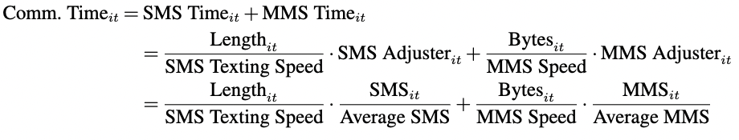
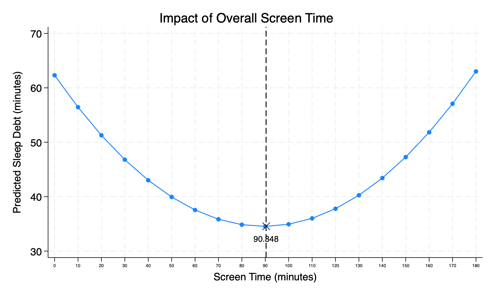

| sms | mms | message | length | bytes | screen_time | screen_com | screen_nocom | sc_com_pct | screen_com_level2 | com_level | ||
|---|---|---|---|---|---|---|---|---|---|---|---|---|
| count | 114762.00 | 114762.00 | 114762.00 | 114762.00 | 114762.00 | 114762.00 | 114762.00 | 114762.00 | 114762.00 | 114762.00 | 114762.00 | 114762.00 |
| mean | 19.31 | 0.73 | 0.50 | 20.54 | 675.84 | 630.28 | 39.27 | 12.48 | 26.79 | 27.66 | 0.26 | 0.26 |
| std | 40.26 | 3.11 | 6.77 | 41.73 | 1706.43 | 3575.41 | 38.62 | 25.25 | 36.43 | 41.55 | 0.44 | 0.44 |
| min | 0.00 | 0.00 | 0.00 | 0.00 | 0.00 | 0.00 | 0.00 | 0.00 | 0.00 | 0.00 | 0.00 | 0.00 |
| 10% | 0.00 | 0.00 | 0.00 | 0.00 | 0.00 | 0.00 | 0.00 | 0.00 | 0.00 | 0.00 | 0.00 | 0.00 |
| 15% | 0.00 | 0.00 | 0.00 | 0.00 | 0.00 | 0.00 | 0.00 | 0.00 | 0.00 | 0.00 | 0.00 | 0.00 |
| 20% | 0.00 | 0.00 | 0.00 | 0.00 | 0.00 | 0.00 | 3.70 | 0.00 | 0.00 | 0.00 | 0.00 | 0.00 |
| 25% | 0.00 | 0.00 | 0.00 | 0.00 | 0.00 | 0.00 | 8.23 | 0.00 | 0.00 | 0.00 | 0.00 | 0.00 |
| 50% | 3.00 | 0.00 | 0.00 | 3.00 | 39.00 | 0.00 | 29.23 | 0.00 | 11.13 | 0.00 | 0.00 | 0.00 |
| 55% | 5.00 | 0.00 | 0.00 | 6.00 | 118.00 | 0.00 | 33.72 | 0.04 | 16.03 | 0.13 | 0.00 | 0.00 |
| 60% | 8.00 | 0.00 | 0.00 | 9.00 | 221.00 | 0.00 | 38.82 | 0.61 | 21.22 | 2.36 | 0.00 | 0.00 |
| 65% | 11.00 | 0.00 | 0.00 | 12.00 | 354.00 | 0.00 | 44.37 | 2.56 | 26.88 | 10.13 | 0.00 | 0.00 |
| 70% | 15.00 | 0.00 | 0.00 | 17.00 | 520.00 | 0.00 | 50.79 | 6.52 | 33.30 | 28.04 | 0.00 | 0.00 |
| 75% | 21.00 | 0.00 | 0.00 | 23.00 | 737.00 | 0.00 | 58.32 | 12.98 | 40.98 | 61.38 | 1.00 | 1.00 |
| 80% | 29.00 | 1.00 | 0.00 | 31.00 | 1020.00 | 52.50 | 67.36 | 21.23 | 50.35 | 100.00 | 1.00 | 1.00 |
| 85% | 40.00 | 1.00 | 0.00 | 43.00 | 1419.00 | 376.43 | 79.03 | 31.32 | 62.52 | 100.00 | 1.00 | 1.00 |
| 90% | 57.00 | 2.00 | 0.00 | 61.00 | 2047.00 | 1281.11 | 94.93 | 44.95 | 79.25 | 100.00 | 1.00 | 1.00 |
| 95% | 91.00 | 4.00 | 0.00 | 95.00 | 3221.95 | 3055.67 | 120.68 | 68.22 | 106.88 | 100.00 | 1.00 | 1.00 |
| max | 1009.00 | 278.00 | 327.00 | 1015.00 | 297239.00 | 266279.66 | 179.99 | 179.99 | 179.99 | 100.00 | 1.00 | 1.00 |
1 Hypothesis Development
For the hypotheses development, I referred to the paper “Thinking about U: Theorizing and testing U- and inverted U-shaped relationships in strategy research” (Haans, Pieters, and He 2016)to motivate and develop our paper. he measure- ment of smartphone usage can be measured by:
Duration
Frequency (Marciano and Camerini 2022)
1.1 The Effects of Overall Smartphone Usage
1.1.1 Positive Effects (Increasing pathway)
Crowding-out effect on sleep time
Increases exposure time to blue light
1.1.2 Negative Effects (Decreasing pathway)
Using smartphones for leisure activities increases psycho- logical detachment from work/study (Hülsheger et al. 2014). In addition, “The dose makes the poison.” The impact of overall smartphone use on sleep debt may depend on the amount of use, and moderate smartphone use could benefit sleep:
We hypothesize that:
Hypothesis 1: There exists a U-shaped relationship between sleep debt and the amount of smartphone use before sleep.
1.2 Moderating Effects of Social Interaction Usage
We measure social interaction usage by two indicators: message count and network size (contact count). We create a moderator Message Level: The message level is created based on the mean of message frequency(1 if > mean, 0 if \(<\) mean). Same for Network Size Level.
Based on the topologies about interaction and intimacy, we propose that:
We estimate the moderating effects of message level and network size with the following specifications:
The estimation results are as follow:

1.3 Robustness Checks
1.3.1
1.3.2
1.3.3 Contact Level as Moderator

1.3.4 InnerContact Level as Moderator
1.3.6 Family as Moderator
2 Model and Results
2.1 Descriptive Statistics
sms: SMS message
mms: MMS message
whatsapp: Whatsapp message
message: sms+mms+whatsapp
length: Total Length of message in characters within 3 hours
bytes (KB): Total Size of image (MMS) in bytes within 3 hours
screen_time: overall screen time (minutes) within 3 hours
screen_com: communication screen time (minutes) within 3 hours
screen_nocom: non-communication screen time (minutes) within 3 hours
sc_com_pct: percentage of communication screen time (screen_com/screen_time, 0-100)
screen_com_level2: dummy variable for communication screen time (0: sc_com_pct<50 %; 1: sc_com_pct ≥ 50 %)
com_level: dummy variable for message frequency (0: message <average message ; 1: message ≥ average message)
Since the communication screen time depends on SMS messaging time and MMS messaging time. We calculate the approximate communication time as follow:

SMS messaging time depends on
the text characters (length),
SMS texting speed (the number of characters one can text per minute),
SMS (the number of SMSs within 3 hours).
MMS messaging time depends on
the size of MMS (Bytes),
MMS messaging speed (the Bytes one can communicate per minute),
MMS (the number of MMSs within 3 hours).
2.2 Communication Vs No-Communication (with Assumptions)
2.2.1 Impact of Overall Screen Time
The predicted sleep debt is based on the third column (highlighted), the turning pint for the overall screen time is 90.348 minutes.

2.2.2 Comm. vs Non-Comm.
2.2.3 Predicted Sleep Debt by NoComm. Screen Time (Interval = 10 min)
2.2.4 Predicted Sleep Debt by Comm. Screen Time(Interval = 10 min)
We observe that:
The turning pint of communication screen time comes later than that of non-communication screen time, which suggests that communication screen time becomes problematic later than that of non-communication screen time.
The predicted sleep debt of communication screen time is lower than that of non-communication screen time
2.3 Moderating Effect of Communication (without Assumptions)
In the the second column, we add an interaction term Message(High/Low) for screen time variables. The predicted sleep debt under low and high message levels are shown as follow:
We observe that:
The turning pint of screen time with high message level later than that with low message level, which suggests that screen time with high message level becomes problematic later than that with low message level.
The predicted sleep debt of screen time with high message level is lower than that with low message level.
The message level is created based on the mean of message frequency(1 if > mean, 0 if < mean). We can observe that message level moderates the impact of screen time by
1) moving the turning point right, and
2) flattening the curve, which are the two ways of moderation effects in U-shape effects (Haans, Pieters, and He 2016).
2.4 Appendix
2.4.1 Predicted Sleep Debt by Screen Time Intervals
2.4.2 Predicted Sleep Debt with Moderating Effects by Screen Time Intervals
References
Haans, Richard F. J., Constant Pieters, and Zi-Lin He. 2016. “Thinking about U: Theorizing and Testing U- and Inverted U-Shaped Relationships in Strategy Research.” Strategic Management Journal 37 (7): 1177–95. https://doi.org/10.1002/smj.2399.
Hülsheger, Ute R., Jonas W. B. Lang, Franziska Depenbrock, Carmen Fehrmann, Fred R. H. Zijlstra, and Hugo J. E. M. Alberts. 2014. “The Power of Presence: The Role of Mindfulness at Work for Daily Levels and Change Trajectories of Psychological Detachment and Sleep Quality.” Journal of Applied Psychology 99 (6): 1113–28. https://doi.org/10.1037/a0037702.
Marciano, Laura, and Anne-Linda Camerini. 2022. “Duration, Frequency, and Time Distortion: Which Is the Best Predictor of Problematic Smartphone Use in Adolescents? A Trace Data Study.” PLOS ONE 17 (2): e0263815. https://doi.org/10.1371/journal.pone.0263815.
1.2.1 Social Interaction as Moderator